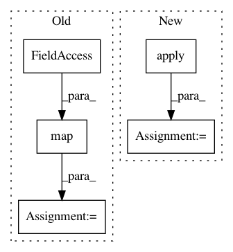

f4bb1de2fe46de99c03dba0b9c76685a998b4276,preprocessing.py,,get_input_tensors,#Any#Any#Any#Any#Any#Any#Any#Any#,183
Before Change
dataset = dataset.map(
functools.partial(batch_parse_tf_example, batch_size))
if random_rotation:
dataset = dataset.map(_random_rotation_pyfunc)
return dataset.make_one_shot_iterator().get_next()
After Change
if random_rotation:
// Unbatch the dataset so we can rotate it
dataset = dataset.apply(tf.data.experimental.unbatch())
dataset = dataset.apply(tf.data.experimental.map_and_batch(
_random_rotation, batch_size))
return dataset.make_one_shot_iterator().get_next()
In pattern: SUPERPATTERN
Frequency: 5
Non-data size: 5
Instances
Project Name: tensorflow/minigo
Commit Name: f4bb1de2fe46de99c03dba0b9c76685a998b4276
Time: 2019-12-12
Author: tmadams@google.com
File Name: preprocessing.py
Class Name:
Method Name: get_input_tensors
Project Name: tensorflow/tpu
Commit Name: 7d209b46e2f6402e44c69f6fe00384aa14286b08
Time: 2018-03-22
Author: frankchn@google.com
File Name: models/experimental/resnet_bfloat16/imagenet_input.py
Class Name: ImageNetInput
Method Name: input_fn
Project Name: Pinafore/qb
Commit Name: e79449afe45f4da6f1756a7d92bdd3cd6618c638
Time: 2018-04-25
Author: sjtufs@gmail.com
File Name: qanta/buzzer/util.py
Class Name:
Method Name: process_question
Project Name: tensorflow/tpu
Commit Name: cd033991fb0ba018d2f9c6f3434f02a99fa91941
Time: 2018-06-25
Author: brennan.saeta@gmail.com
File Name: models/experimental/resnet_bfloat16/imagenet_input.py
Class Name: ImageNetInput
Method Name: input_fn
Project Name: keras-team/keras-preprocessing
Commit Name: 6f679b06d10d39edcb066142eec9e3bcd6d9de4b
Time: 2019-02-25
Author: rragundez@users.noreply.github.com
File Name: keras_preprocessing/image/dataframe_iterator.py
Class Name: DataFrameIterator
Method Name: _filter_valid_filepaths